| R4E User Guide |
|
|

|
|
|
Concepts |
Getting Started
Overview
Review for Eclipse (R4E) is a set of Eclipse plugins that provide eclipse-integrated code and text review functionality. R4E supports reviewing files associated to Eclipse projects and optionally included under a Version Control System. Three review workflows are included (Basic, Informal and IEEE standard 1028-compatible Formal reviews).
The main purpose of R4E is to review Source Code, especially Java and C/C++ Source code. Eventually, support for reviewing Data Models (based on EMF) will be included. R4E also aims to support multiple Version Control Systems (via Eclipse Team Providers). Git (implemented in Eclipse through EGit/JGit) is the only one supported in the initial version.
The R4E User Interface includes three main components:
R4E Review Navigator View,
R4E Properties View and
R4E Context Menus

The
R4E Review Navigator View is the main interface to R4E. It shows all the R4E elements in a hierarchical tree structure The
R4E Properties view presents the properties and attributes attached to each R4E element represented in the Review Navigator view. Some elements values can be altered after creation, and some other or read-only and settable at creation time. The
R4E Context Menu appears in Eclipse Context menus whenever it is possible to use R4E command is this particular context. Please refer to
section below for more information.
Installing R4E
R4E interacts with the follwing features/plugins:
- Version Control System connector: EGit/JGit, Mylyn Versions
- C/C++ Language support: CDT
- Java Language support: JDT
- LDAP Connector: R4E LDAP plugin
- Email support: R4E SMTP connector
- Meeting support: R4E VCalendar connector
- General: EMF, Apache Common packages
To enable full functionality, make sure these features/plugins are included in your current Eclipse installation
Starting R4E
R4E uses Eclipse Capabilities to manage its functionalities. In order to use R4E, its capabilities must be enabled. This can be done be enabling R4E in the Eclipse
Preferences->General->Capabilities preference page.

The start up R4E, show the Review Navigator View using the Eclipse Show View menu:
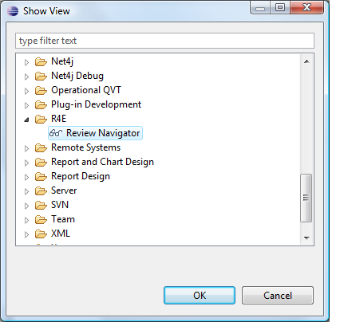
R4E Configuration
The R4E Configuration can be entered by accessing the R4E Preferences Pages, which are part of the Eclipse Global Preferences. There are three R4E Preference Pages:
R4E General Preferences,
R4E LDAP Settings, and
SMTP Hosts Definitions.
R4E General Preferences
R4E General Preferences page is split up into four tab sections.
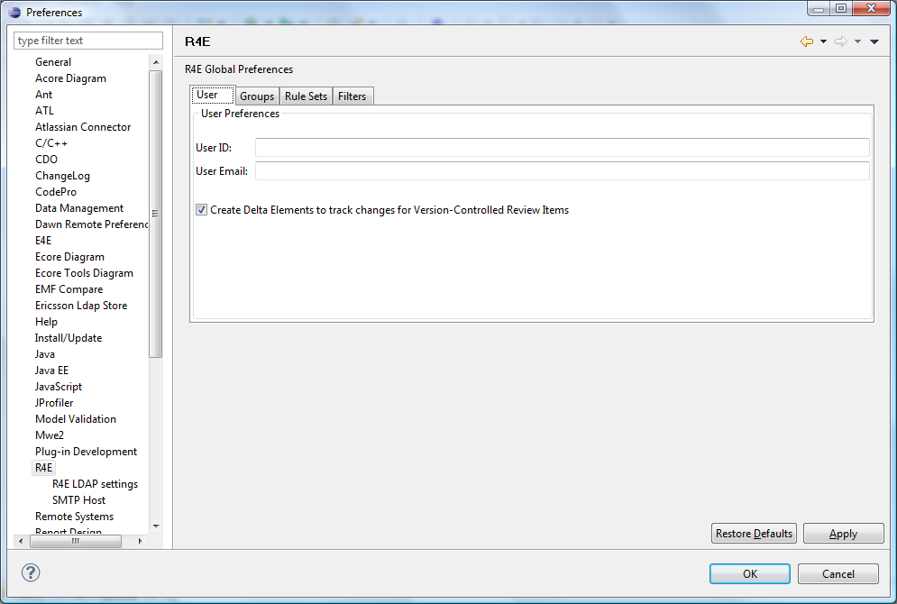
This is used to enter the current user details. The User ID is set by default to the login ID of the current session and can be modified to any String that can be used to identify the user. The User Email should be set to a valid email for the user. The E-mail address is used to notify the user informations about the reviews he is currently part of by Email, as configured in the SMTP Hosts Definitions section. Take note that if the LDAP Preferences are filled-in (see below) and a corresponding LDAP database can be resolved, then this field will be automatically be set based on the User ID entered. The
Create Delta Elements... check box is used to control the display of file differences as elements in the Review Navigator. The
Update Postponed Anomalies... is used to automatically import outstanding anomalies that were set to postponed in previous versions of files included in the current review. See Postponed Anomalies section below for more information.

This is used to specify the location of the data files that contain Review Group information. See below for more information on Review Groups. The Name and Description fields show additional information attached to the selected Review Group file. Typically, all R4E data files will be located on a shared network drive. Users can add one or multiple references to Group files to their workspace as needed using the ''Add ''button. Files can be removed from the workspace by pressing the ''Remove ''button. Files can be moved up or down in the list by clicking the corresponding button. This will affect the order in which the Groups are displayed in the Review Navigator.
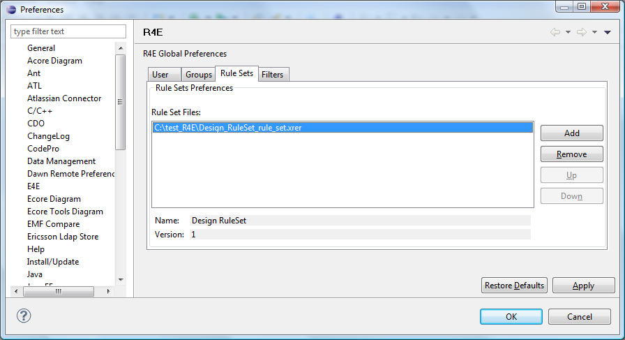
This is used to specify the location of the data files that contain Rule Set information. See below for more information on Rule Sets. The Name and Version fields show additional information attached to the selected Rule Set file. Typically, all R4E data files will be located on a shared network drive. Users can add one or multiple referecnes to Rule Set files to their workspace as needed using the
Add ''button. Files can be removed from the workspace by pressing the ''Remove button. Files can be moved up or down in the list by clicking the corresponding button. This will affect the order in which the Rule Sets are displayed in the Review Navigator.

This is used to set-up default filters that will be applied to the Review Navigator view. See the Filters section below for the various filters descriptions.
R4E LDAP Settings

This is used the specify configuration for an available LDAP database server that contains information about the users. The Server Information part contains LDAP server information (Host, Port, DN (Distinguished Name), and Login User Name and Password) to use. The Mandatory Parameters part contains mapping values for LDAP attributes that maps the User Id, Name and E-Mail parameters The Optional Parameters part contains mapping values for LDAP attributes that maps optional parameters that could exists in the database.
This is optional. If no information is entered, LDAP functionality will be unavailable, but will not affect R4E otherwise
SMTP Hosts Definitions

This is used to specify the mail server(s) that will be used to send manual and automatic email notifications to the users. More than one server can be specified. Users can add one or multiple servers to their workspace as needed using the ''Add ''button. Servers can be removed from the workspace by pressing the ''Remove ''button. Servers can be moved up or down in the list by clicking the corresponding button. The primary server should always be the first on the list.
Eclipse Project Configuration
- R4E can be used to create reviews that include files present in given Eclipse Projects.
- While R4E can operate on stand-alone Eclipse projects (i.e. outside of any Version Control System), it is recommended that it is used in conjuction with projects that are held within Revision Control. Currently, R4E only supports Version-Controlled projects that are associated with Egit as team provider, The
"EGit/User Guide" is the best place to find the information on how to create new git repositories, work with existing git repositories and importing Eclipse projects under and existing git repository into the Eclipse workspace.
- Once the project is associated/connected to the Egit team provider the project will display the project name and associated branch between brackets.
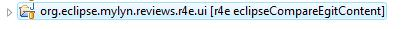
Tutorials
To familiarize yourself with how R4E operates, three tutorials are provided, which focus on the different review types and their respective workflows. As we progress in doing the tutorials, more common functionalities are introduced (such as Notifications, Meeting Requests, Setting reviewed state, Disabling elements etc.).
Configuration and Set-up
Before doing any of the tutorials, we will set-up R4E and configure it to do reviews.
- Open the R4E Review Navigator view by going to the
Window->Show View->Other... dialog.

- Select the
R4E->Review Navigator view. An empty Review Navigator view should now be visible

- Typically, users will use Review Groups and (optionally) Rule Sets already created. For now we will assume none is present and we will create one group.
- Go to the Review Navigator toolbar and click on the
New Review Group icon. This should open the New Review Group dialog.
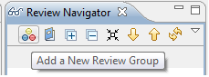
- Add information for the new Group. The folder should normally be set to a shared drive that will be accessible to all users. For this tutorial, we will set it to our local drive.

- Once the Group is created it should show in the Review Navigator View tree. It will automatically be added to your tracking groups in the R4E preferences so that it will appear again next time you open Eclipse to use R4E.
- You can now open the Review Group by right-clicking on it and selecting the
Open Element command. The Group icon should change from a grayed out icon to a multi-colored one.
- Go to the Eclipse R4E preferences and make sure your user identity is set correctly.

- We will now create some Design rules that can be used during reviews. First create a new Rule Set by slecting the
New Rule Set icon in the Review Navigato toolbar. This should open the New Rule Set dialog.
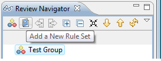
- Add information for the new Rule Set. The folder should normally be set to a shared drive that will be accessible to all users. For this tutorial, we will set it to our local drive

- Now let's create a Rule Area for this rule set by right-clicking on the Rule Set we just created and selecting the
New Rule Area from the context menu.
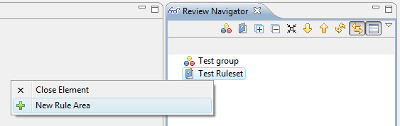
- In the dialog shown, set the Area Name

- New create a Rule Violation under the Rule Are we just created
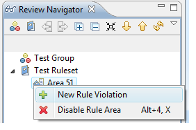
- In the dialog shown, set the Violation Name

- Finally, create a new Rule under this Rule Violation
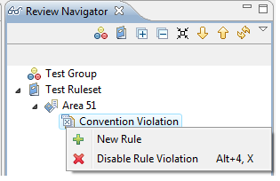
- In the dialog shown, set the Rule values as follows:

We are now ready to proceed to the tutorials.
This tutorial shows how to use R4E by going through a very simple Basic Review. It also introduces how to add Review Items from a Commit to the Version Contro System.
- Using the setup created above, create a new Basic Review by right-clicking on the Group we created and selecting the
New Review command.
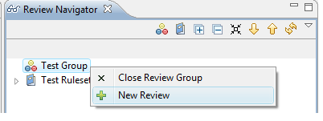
- This will show the New Review dialog

- Once the Review is created, you will notice that new elements were added to the Navigator tree: The review itself, the global anomaly container, and the current user as a new participant to the review.
- You can now browse through the R4E property view, which will appear as soon as you select a new element in the Navigator tree. You will notice that the current participant roles in the Participant Extra Properties tab are set to
Organizer '''and '''Lead. This is the default and it can be changed if needed. Take note that the icons representing the participants in the Navigator View will change depending on the primary role of the participant. You will also notice that the General Properties tab for the review has the start date property set to when the review was created and that the end date property is set to
(In Progress) to indicates that the review is still going on.
- It is now time to add contents to be reviewed. Contents can be added by selecting whole resources (e.g. files directly) or by using the
Find Review Items command on Eclipse project if the project is connected to a Version Control System. Here we will assume that the Eclipse projects are connected to Git (using EGit) and we will use the
Find Review Items command for the R4E context menu on a given project. Select a project connected to Git and right-click on it to use the
R4E->FindReviewItems command.

- This should show the Find Review Items dialog for Git

- We will now pick the current Commit and add it to the review. The Review Navigator view should now show a new Commit Review Item, its children files and their deltas (changes)

- Let's say we are now done adding review items. At this point we could add new reviewers to the review and notify them that the items are ready for reviews. However, since this is a simple tutorial, we will pretend that we are also the reviewer for this review.
- To open the compare editor and perform the review, we can double-click on any of the file of delta element. Let's pick the first delta of the first file. That should open the compare editor.
- Let's now create a new anomaly on the selected text. To do this, right-click on the selected text and use the
R4E->New Anomaly command

- This should trigger the New Anomaly dialog

- Now, let's pretend we are done and the anomaly that the anomaly we highlighted is dealt with. We can now mark this review as completed. To do this, select the Review Element and, in the R4E Properties view, set the
Exit Decision property to
Accepted. Next set the
Phase property in the to
Completed.
- The review is now completed and we are done with this tutorial.
This tutorial shows how to use R4E by going through a very simple Informal Review. It also introduces how to add Review Items manually, how to remove obsolete items from the Review Navigator view, and how to use Email notifications.
- Using the setup created above, create a new Informal Review by right-clicking on the Group we created and selecting the
New Review command.
- This will show the New Review dialog

- As in the basic Review tutorial above, the Review Navigator tree is updated with the new elements.
- It is now time to add contents to be reviews. In the previous tutorial, we showed how to add a Commit Review Item from a project under revision control. Here we will show how to add a Resource Review Item. Let's say you have a brand new file, not necessarily under revision control, that you want to be reviewed.
- Assume we use a Java project. Open the Package Explorer view, right-click on a file within the target project and trigger the
Add Review Item command from the R4E context menu.
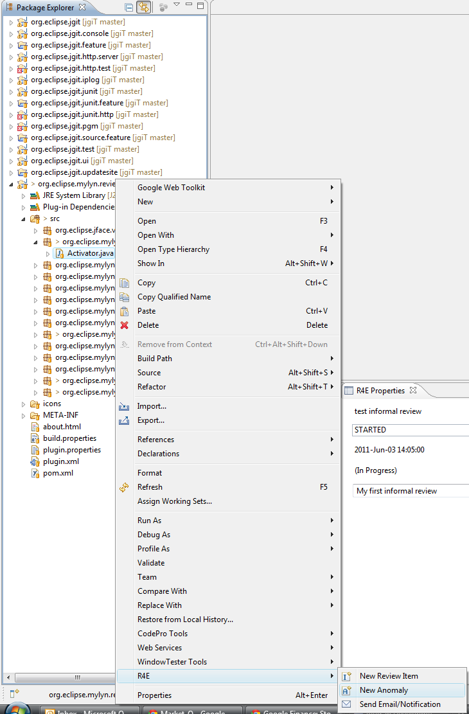
The Review Navigator view should now show a new Resource Review Item, its children file and the selection, which in this case will span the whole file from the first to the last lines.
- Now let's add another reviewer to this review by right-clicking on the participants container icon in the review navigator and selecting the
New Participant command from the context menu

- This will show the New Participant dialog.
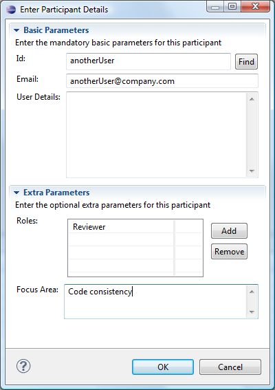
- Note that we added this Participant as a reviewer only. We also set to optional focus area.
- Let's say we are now done adding review items. We will now notify the new Participant we added that the items are ready for review. To do this, right-click on the current review and choose the
Send Email/Notification command. When the subsequent dialog appears, select the
Notify Particpants of New Items ready for Review.

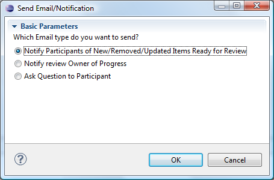
- This will trigger the Email Client dialog. You can review the contents of the message, modify it as you see fit, and press the ''OK ''button to send it. Of course, the destination email address(es) need to be valid for the email to actually be sent.
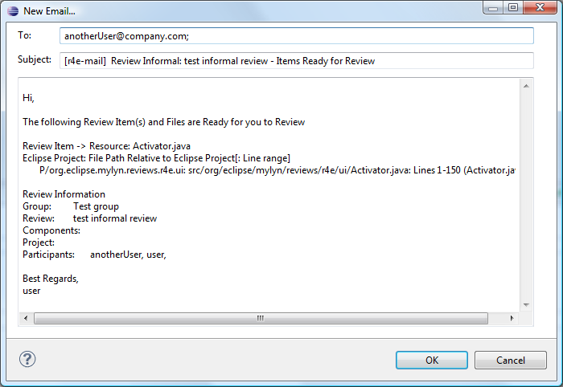
- Once this is done, the reviewer should receive the email and can start reviewing the code. So, let's say we are now the reviewer and we want to log a general anomaly on the review. We right-click on the Global anomaly container icon in the Review Navigator view and we select the
New Anomaly command from the context menu

- This will trigger the New Anomaly dialog.
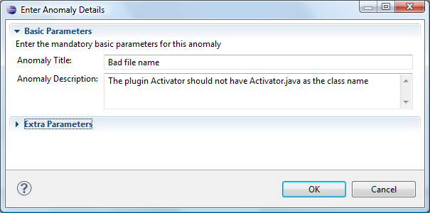
- Now we should see that the Anomaly was added to the Review Navigator view, prepended with the Anomaly state (which is
ASSIGNED ''at this point). If we do not have any other anomalies to enter, we can indicate that we are done reviewing by setting the review as reviewed by us. To do so, right-click on the Review icon in the Review Navigator and use the ''Mark as User Reviewed command.

- Since we are done reviewing, a popup dialog appears to ask us to send a Completion Notification to the Review Owner (Lead). Click OK and send the notification email out. The Review Navigator view should now look like this:

- Now, in order to complete the review, we need to resolve the anomaly that was raised. Select the anomaly icon in the Review Navigator view and look at the R4E Properties view detailed tab. We should see he following:
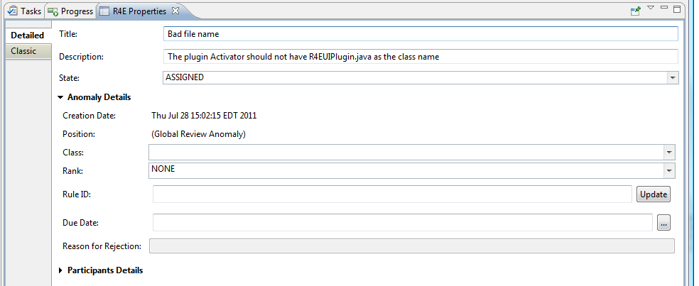
- We see that the optional class and rank are not set for this anomaly, we could have set them after creation, or we can set them here if we want. In order to resolve the anomaly, the author of the code should be notified and the reviewer, lead and author should work together in resolving the issue. Let's pretend that the anomaly is resolved and add a comment to it saying so. Right-click on the Anomaly icon on the Review Navigator view and add a Comment by using the
New Comment command from the context menu.

- This will trigger the New Comment dialog.

- Once we've entered a comment, we can now the set Anomaly state to
FIXED by changing the
State ''combo box value in the R4E Properties view. Note that the ''Fixed by property (in the
Participant Details expandable section) gets automatically set to the current user. This can be changed to any of the participants if needed.
- We can now complete the review as we've done in the previous tutorial, by setting the
Exit Decision field in the Review R4E Properties view->Detailed tab/Decision Information expandable section to
Accepted and the Phase field in the Review R4E Properties view->Detailed tab to
COMPLETED.
- To remove this completed review from the Review Navigator tree so that is does not clutters the view, we can Disable it. To do that, first close the review by right-clicking on the Review element from the Review Navigator view and selecting the
Close Element command form the context menu. Then, once the review element is closed, disable it by selecting the Disable element command in the same fashion.
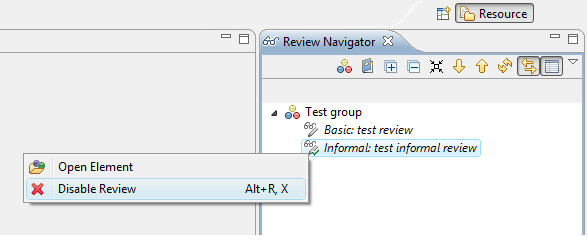
- We are now done with this tutorial.
This tutorial shows how to use R4E by going through a very simple Formal Review. It also introduces how to work with Linked Anomalies, Design Rules, optional review parameters, review time tracking, and how to use Meetings Notifications.
- First we will add default projects and components to our review group. Select the Review Group icon in the Review Navigator view and go to the Group Detailed properties tab in the R4E Properties view. In the
Project and Components expandable section, add Projects and Components to the Group by clicking on the
Add buttons for the
Available Projects and
Available Components tables and typing in some values. We will also add a reference to the Rule Set we created in the setup in the
Rule Sets expandable section.
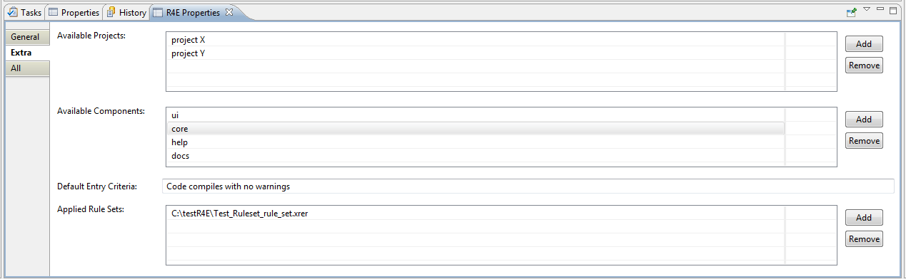
- Using the setup created above, create a new Formal Review by right-clicking on the Group we created and selecting the
New Review command.
- This will show the New Review dialog. In this case we will populate the Review optional elements as shown
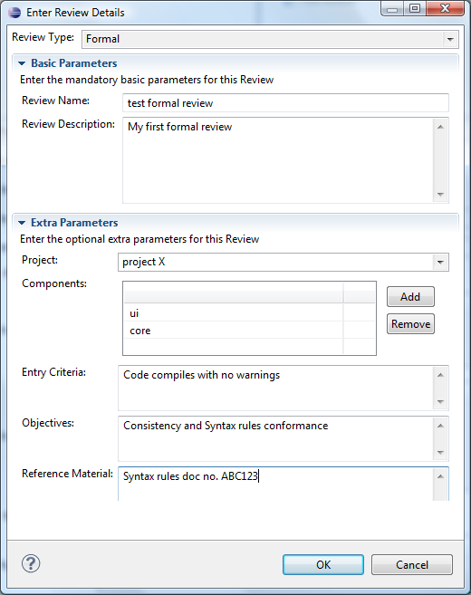
- As in the other Review tutorials above, the Review Navigator tree is updated with the new elements.
- If you look at the Review Properties Detailed tab, you will notice that is display a
Phase Map table. The phase map is only displayed for formal reviews and is used to track the progress of the review. At review creation, the ''PLANNING ''phase is the active one.
- It is now time to add contents to be reviewed. As in the basic tutorial review, we will add a Commit Review Item using the
Find Review Items command.
- This should show the Find Review Items dialog for Git
- We will now pick the current Commit and add it to the review. The Review Navigator view should now show a new Commit Review Item, its children files and their deltas (changes)

- Now, as in the Informal review tutorial, let's add another reviewer to this review by right-clicking on the participants container icon in the review navigator and selecting the
New Participant command from the context menu

- This will show the New Participant dialog.
- Note that we added this Participant as a reviewer only. We also set to optional focus area.
- Let's say that we are done adding new items and participants for this review, we can now transition the review phase from ''PLANNING ''to ''PREPARATION ''by selecting the Phase combo box in the R4E Properties to the Review. Note that phases can only be changed if we are the phase owner, which we are in this case. We will now automatically be asked to set up a decision meeting by entering meeting details.

- Once the details are entered, the Email client dialog is shown, and upon clicking the ''OK ''button, a new notification of items ready for review, bundled with a meeting invitation will be sent to all participants.
- Now, in
PREPARATION ''phase, the users can review the included items. Reviewers can send progress notification or ask questions to other participant by right-clicking on a Review Navigator element and using the ''Send Email/Notification command. Anybody can also add new Review Items to the review, which will automatically notify other particpants with a
New Item Ready for Review notification.
- Let's say we found that part of the modified code is not correct, we can select the Delta in the Review Navigator and directly writen an Anomaly on it by right-click on the Delta and using the
New Linked Anomaly command.

- This will show the
New Anomaly dialog. For this anomaly, we will refer to an existing design rule. Expand the Extra parameters section and select the first design rule from the tree. Note that the text fields are set to the value of the anomaly selected.
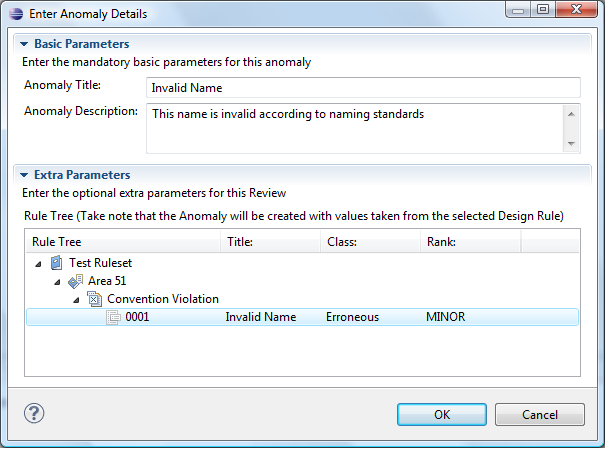
- We are finished reviewing the files and we will now add the time we spent reviewing the files. We do this by selecting the participant element in the Review Navigator and going to its R4E Properties view Detailed tab, Time Management expandable section. In the
Time Spent table, add the time we spent.
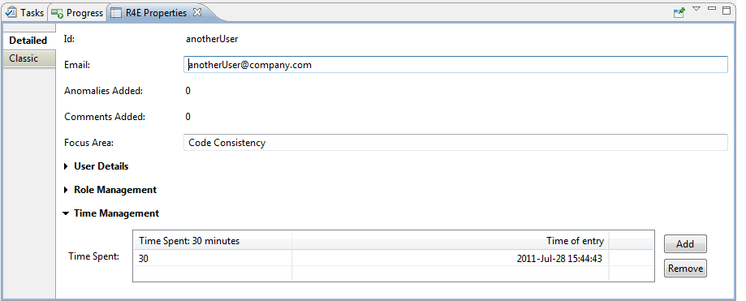
- As in the informal review tutorial, we now mark the review as User completed, which will trigger the sending of the completion notification to the review lead.
- The review lead can now move the Review Phase to ''DECISION ''in the same way the previous transition was done.
- In the decision phase, it is time to assess anomalies and if necessary assign them to particpants so that they can be handled and fixed. Let's set our Anomaly to ''ACCEPTED ''and assign it to a participant. We do this by setting the appropriate values the the R4E Properties Extra tab for the selected anomaly.
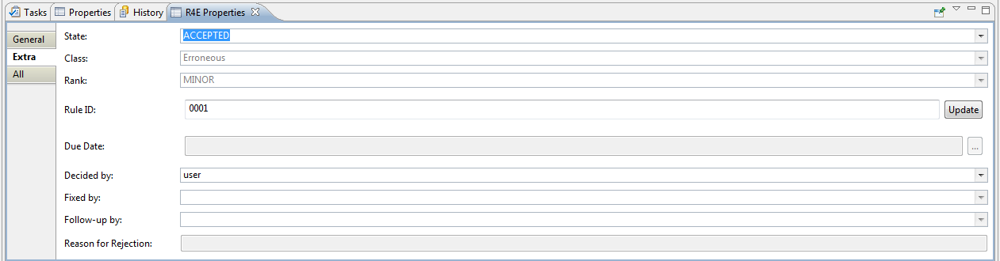
- We are now done with all anomalies so we will set the review decision properties. In the Review element R4E Properties, let set the values as follows
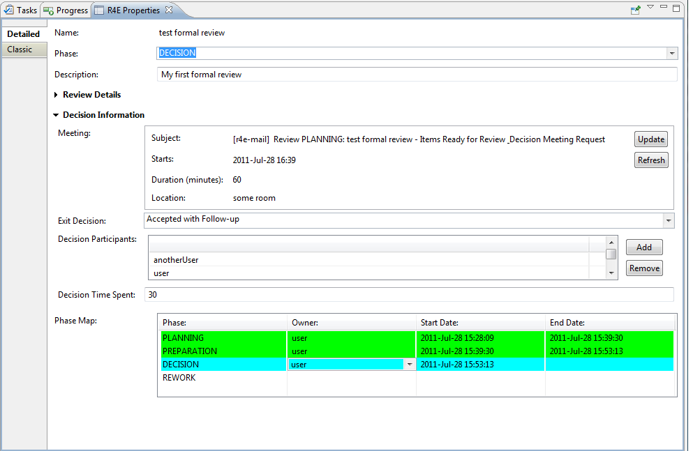
- We set the
Exit decision to
Accepted with follow-up, since some anomalies need to be fixed. We also enter the decision participants and decision time spent values.
- Once the anomaly is fixed, we can change its state to
FIXED in the R4E Properties. The fix can now be reviewed by the reviewer, who can set it to
VERIFIED. Its properties should now look like this:
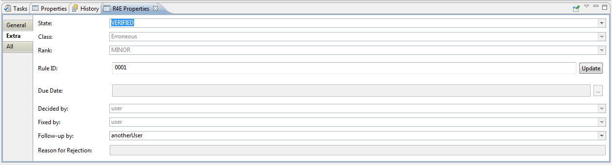
- At this point all anomalies are covered and we can complete the review by setting its phase to
COMPLETED.
- We are now done with this tutorial.
|
|
|
|
|
Concepts |